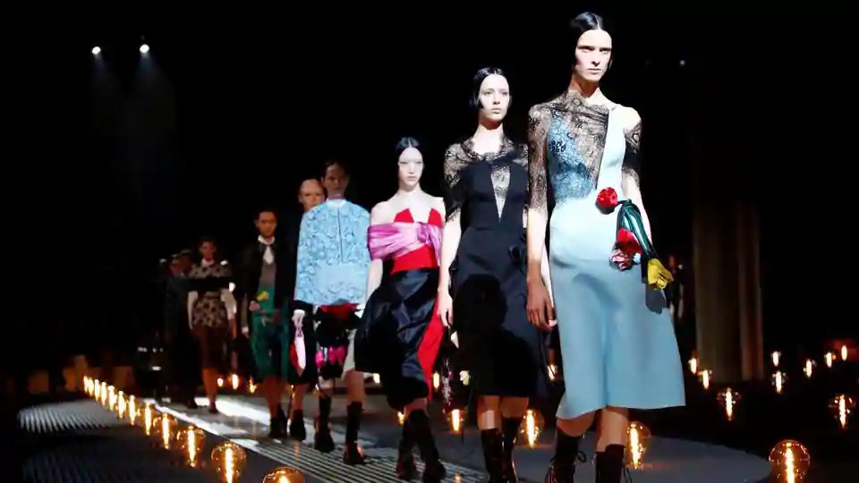

Italian luxury label Prada added a touch of romance to Milan Fashion Week on Thursday with a winter collection looking at both sides of a love story.Designer Miuccia Prada, considered a fashion trailblazer in the industry, looked at fear and fairy tale in romance, contrasting both in her looks, in her use of materials as well as in the music chosen for the runway show. On a catwalk set amidst a field of lights, models first walked out in all black outfits - a strapless dress or belted coat - before softer floral touches began. Designs of large yellow, red roses as well as other colourful flowers decorated dresses, printed or attached with their green stems hanging off skirts and frocks like ribbons. Some of the flowers were black on all black outfits. Nods to military wear came in olive green jackets with furry collars, coats and pocketed skirt suits. Grey skirt suits had slit sleeves at the front and there were also herringbone-like dresses and coats. As the Autumn/Winter 2019 show’s music alternated between heavy metal rock and softer instrumental, other romantic touches emerged such as lace veiling and thunderbolts on dresses, meant to reference a coup de foudre of two people meeting. Colourful floral prints decorated an array of satin dresses or shiny skirts. “The collection is a reaction to and reflection of humanity, of our strengths and fragilities,” show notes said. “Romance can be an antidote to the harshness of our times.” The contrasting came in Prada’s mix of materials - from cloth and nylon to satin and lace, which came on dresses and as jackets. Some dresses mixed mohair fur on top and lace below, while others filled gowns. Wearing their hair in long plaits, some models wore asymmetric black dresses with cartoon pictures of Frankenstein and his bride. Footwear consisted of chunky high lace up boots as well as sparkly sandals. Colourful furry trims adorned backpacks and handbags, staples of the brand founded in 1913. Prada, a Milan-based but Hong-Kong listed luxury group, is jointly run by the designer and her husband Patrizio Bertelli. “The world of fashion needs to have a voice on many topics,” Prada told reporters, adding the line spoke of “the good and bad together.” “They are not contradictions, but an invitation for a union. Good and bad, strong and weak are present in...everyone.”
Prada contrasts two sides of romance at Milan Fashion Week Fall/Winter 2019
Italian luxury label Prada added a touch of romance to Milan Fashion Week on Thursday with a winter collection looking at both sides of a love story.Designer Miuccia Prada, considered a fashion trailblazer in the industry, looked at fear and fairy tale in romance, contrasting both in her looks, in her use of materials as well as in the music chosen for the runway show. On a catwalk set amidst a field of lights, models first walked out in all black outfits - a strapless dress or belted coat - before softer floral touches began. Designs of large yellow, red roses as well as other colourful flowers decorated dresses, printed or attached with their green stems hanging off skirts and frocks like ribbons. Some of the flowers were black on all black outfits. Nods to military wear came in olive green jackets with furry collars, coats and pocketed skirt suits. Grey skirt suits had slit sleeves at the front and there were also herringbone-like dresses and coats. As the Autumn/Winter 2019 show’s music alternated between heavy metal rock and softer instrumental, other romantic touches emerged such as lace veiling and thunderbolts on dresses, meant to reference a coup de foudre of two people meeting. Colourful floral prints decorated an array of satin dresses or shiny skirts. “The collection is a reaction to and reflection of humanity, of our strengths and fragilities,” show notes said. “Romance can be an antidote to the harshness of our times.” The contrasting came in Prada’s mix of materials - from cloth and nylon to satin and lace, which came on dresses and as jackets. Some dresses mixed mohair fur on top and lace below, while others filled gowns. Wearing their hair in long plaits, some models wore asymmetric black dresses with cartoon pictures of Frankenstein and his bride. Footwear consisted of chunky high lace up boots as well as sparkly sandals. Colourful furry trims adorned backpacks and handbags, staples of the brand founded in 1913. Prada, a Milan-based but Hong-Kong listed luxury group, is jointly run by the designer and her husband Patrizio Bertelli. “The world of fashion needs to have a voice on many topics,” Prada told reporters, adding the line spoke of “the good and bad together.” “They are not contradictions, but an invitation for a union. Good and bad, strong and weak are present in...everyone.”